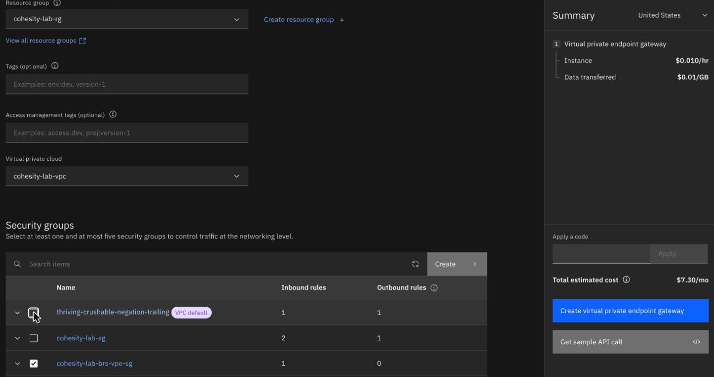
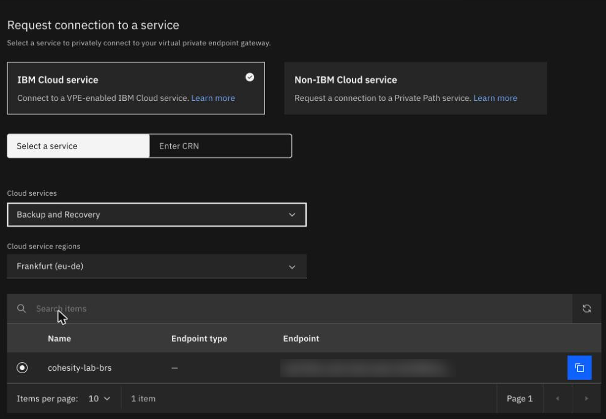
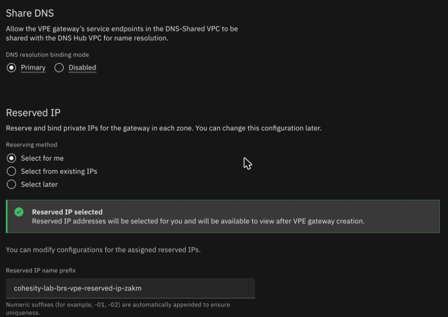

Private endpoints and security groups
By the end of this unit you'll know what a private endpoint gateway gives your servers, why the VPC default security group blocks them, and which port the Connector Agent needs once a private endpoint exists.
Northgate Freight is a made-up haulier. It wants its servers to reach BRS at a private address inside its VPC, through a private endpoint gateway, and it needs that gateway to let the servers in.
Every number and message in this unit comes from runs in our lab. Names, addresses and the group names were changed to made-up Northgate values, and the screenshots show the lab's own names, with the service endpoint blurred.
A gateway, and two security groups
A virtual private endpoint (VPE) gateway in your VPC lets servers reach the BRS API at a private address inside the VPC. Traffic to the gateway passes the gateway's security group. The VPC default group accepts traffic only from its own members.
What does a VPE gateway give Northgate's servers?
Show the answer
A private address for the BRS API. The gateway lets servers reach the API at a private address inside the VPC. In our lab the private name resolved to the gateway's address six seconds after the gateway was stable, and the gateway was ready in 22 seconds.
What did the gateway cost, as the console showed it?
Show the answer
USD 7.30 a month. The form's summary showed USD 0.010 an hour for the gateway and USD 0.01 a GB transferred, which is USD 7.30 a month before data.
What happens when the agent restarts?
Northgate has a Connector Agent on a Linux server, and a VPE gateway for the BRS instance. The gateway's own group allows only TCP 443 from the servers. A 20 MiB backup succeeded, and the agent's only connection stayed on IBM's private service endpoint. Then Northgate's backup admin restarts the Connector Agent: stop, then start.
What happens to the agent?
Show the answer
It tries the gateway on 29991 and can't connect. In our lab the restart made the agent connect to the gateway's address on port 29991. The gateway's group allowed only 443, so the connection stayed at SYN-SENT, and connector-agent list showed isConnected: false with no message. A reboot does the same, because the agent is started again.
Time (UTC) What happened
14:41:24 agent stopped, then started
gateway address, port 29991, SYN-SENT
14:43:15 inbound TCP 29991 added to the gateway group
14:43:29 agent connected through the gatewayWhich rule fixes it?
Show the answer
Inbound TCP 29991 on the gateway's group. The agent connected through the gateway within 15 seconds of the rule, and a 20 MiB backup then succeeded, with the agent's only connection on the gateway.
ibmcloud is security-group-rule-add ng-vpe-sg inbound tcp --port-min 29991 --port-max 29991 --remote ng-servers-sg
The instance's own record lists three ports that a VPE serves: 443, 29991 and 11117. We didn't test what uses 11117.
The call times out
Northgate's backup admin makes the gateway and leaves its security group as it is. From a server, they call the BRS API at the private name. This is what came back in our lab.
$ curl https://<GUID>.private.eu-de.backup-recovery.cloud.ibm.com/... (no answer: timed out after 15 s)
What went wrong?
Show the answer
The gateway got the VPC default security group, which blocks the servers. In our lab the console form ticked that group by itself.
What fixed it?
Show the answer
A group of its own. With the new group in place, the call without a token gave HTTP 401, and with a token HTTP 200, both at the gateway's address. On the command line, security-group-target-add takes the gateway's ID, and refuses the gateway's name.
Watch for this. The connector server form does the same thing. In our lab it started with a VPC's default security group, so we ticked our own group and unticked the VPC default.
Make the gateway in the console
These screens come from the IBM Cloud console in our lab. Click where you'd click. After two misses, the right place is marked.

The form ticks one security group by itself. Click it.
Show where
Right. It's the VPC default group, the one that blocked the servers. Tick your own group first, then untick the default, because the form needs at least one.

Under Request connection to a service, you keep IBM Cloud service and Select a service. Where do you choose Backup and Recovery?
Show where
Right. It's the Cloud services field. Cloud service regions then becomes Frankfurt (eu-de), and the instance is listed, so you choose it.

Which DNS resolution binding mode did we keep in our lab? Click it.
Show where
Right. It's Primary. Reserved IP stays at Select for me. Then click Create virtual private endpoint gateway. In our lab it was created at 14:38:34 UTC and stable at 14:38:48 UTC.
Three questions
Review from unit 2.3. Registering a source through a new connector server fails with "Cannot find a valid connector". What do you do?
Show the answer
Wait, then register again. In our lab the same command worked about 2 minutes later.
A VPE gateway now exists for the instance, and a Connector Agent restarts. Which port must the gateway's security group allow?
Show the answer
29991. The agent connects to the gateway on 29991. With only 443 open, it stays at SYN-SENT and shows isConnected false, with no message.
Which security group does the console's VPE form tick by itself?
Show the answer
The VPC default group. It accepts traffic only from its own members, so the servers can't reach the gateway.
You can open the way to a private endpoint
The VPE form ticks the VPC default group, which blocks your servers, so use a group of your own. Once a private endpoint exists, a restarted Connector Agent needs port 29991 open on the gateway's group, and shows no message if it's closed.